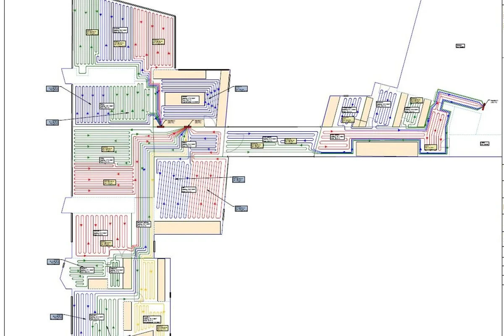
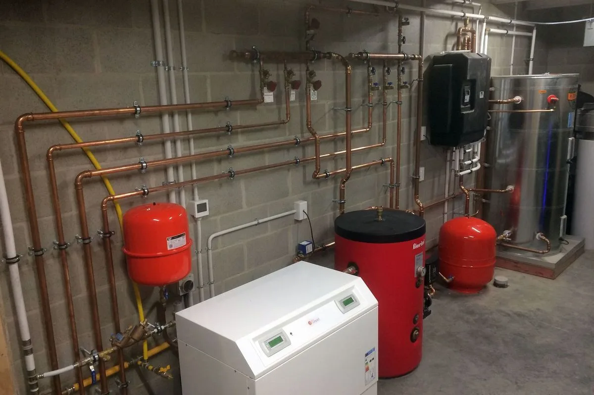
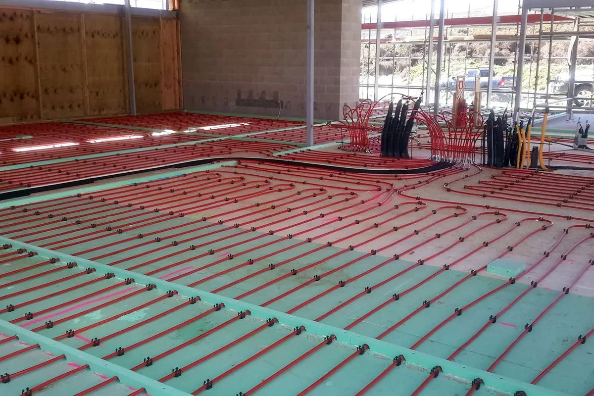
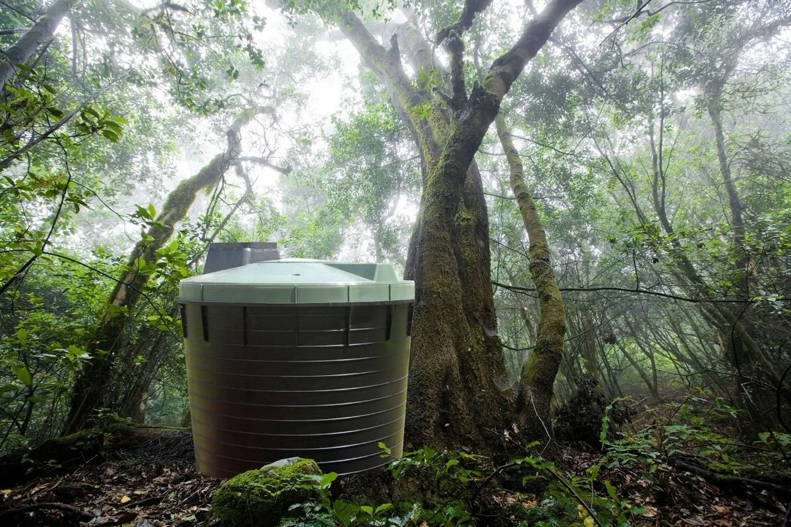

30kW ground source
A Kensa ground-source heat pump draws stable low-grade energy from the ground to serve the home's heating demand.

Architectural new build · Jacks Point
A large alpine home whose heating, energy and wastewater systems were designed for efficiency at scale.
The brief
A home of more than 500m² creates a substantial heating and energy challenge, particularly at the foot of the Remarkables.
Working with the homeowner and project managers from consultation through completion, Optum designed the services as one coordinated system: ground-source heating, zoned distribution, thermal storage, on-site generation and wastewater treatment.
The system balances generous comfort with deliberate control over when and where energy is used.
A Kensa ground-source heat pump draws stable low-grade energy from the ground to serve the home's heating demand.
Separate underfloor zones with Heatmiser controls allow different parts of the home to be managed independently.
A Rotex thermal store works alongside a 5kW solar array and Power Genius distribution to make better use of generated energy.
Two Biolytix treatment systems complete the integrated response to the site's servicing requirements.
Inside the project
The planning, distribution and plant behind a large alpine home's comfort.




Imagery sourced from Optum's ArchiPro project portfolio.
The outcome
Complex building services made calm, controlled and coherent.
The completed system gives a large architectural home precise zoned comfort, renewable generation and a considered approach to water—all engineered together rather than delivered as separate pieces.
Integrated from consultancy to completionLet's begin
Talk to Optum early and complex services can become one simple, considered plan.
Free consultation